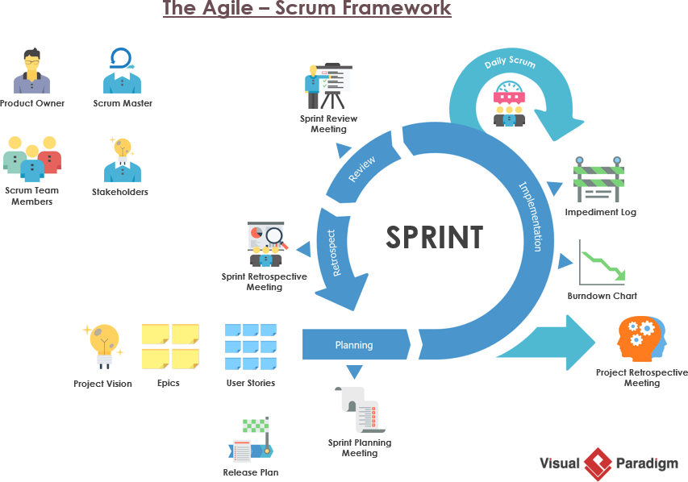

NUEVA OLA DE EJECUCIÓN DE PRUEBAS (SCRUM)
Scrum es un proceso en el que se aplican de manera regular un conjunto de buenas prácticas para trabajar colaborativamente, en equipo, y obtener el mejor resultado posible de un proyecto. Estas prácticas se apoyan unas a otras y su selección tiene origen en un estudio de la manera de trabajar de equipos altamente productivos.
En Scrum se realizan entregas parciales y regulares del producto final, priorizadas por el beneficio que aportan al receptor del proyecto. Por ello, Scrum está especialmente indicado para proyectos en entornos complejos, donde se necesita obtener resultados pronto, donde los requisitos son cambiantes o poco definidos, donde la innovación, la competitividad, la flexibilidad y la productividad son fundamentales.
Scrum también se utiliza para resolver situaciones en que no se está entregando al cliente lo que necesita, cuando las entregas se alargan demasiado, los costes se disparan o la calidad no es aceptable, cuando se necesita capacidad de reacción ante la competencia, cuando la moral de los equipos es baja y la rotación alta, cuando es necesario identificar y solucionar ineficiencias sistemáticamente o cuando se quiere trabajar utilizando un proceso especializado en el desarrollo de producto.
